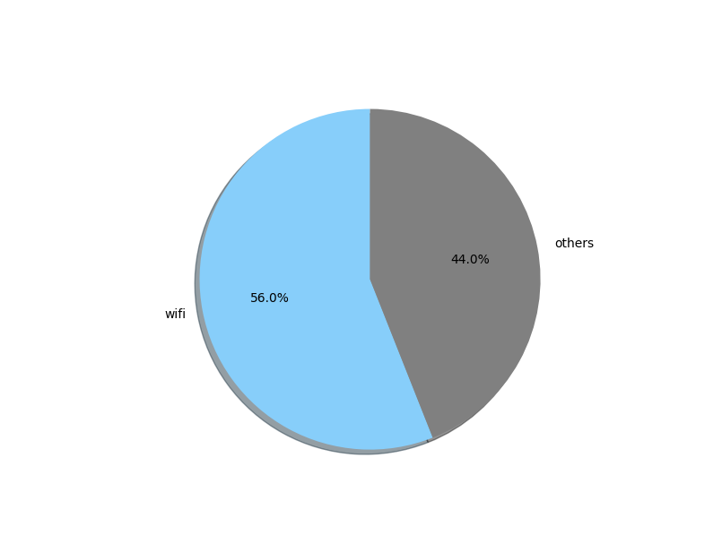
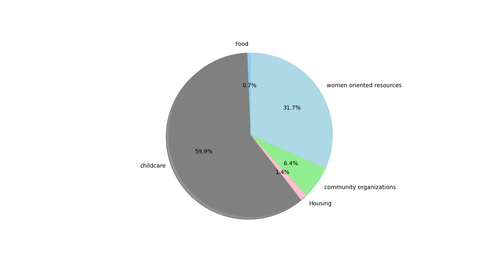
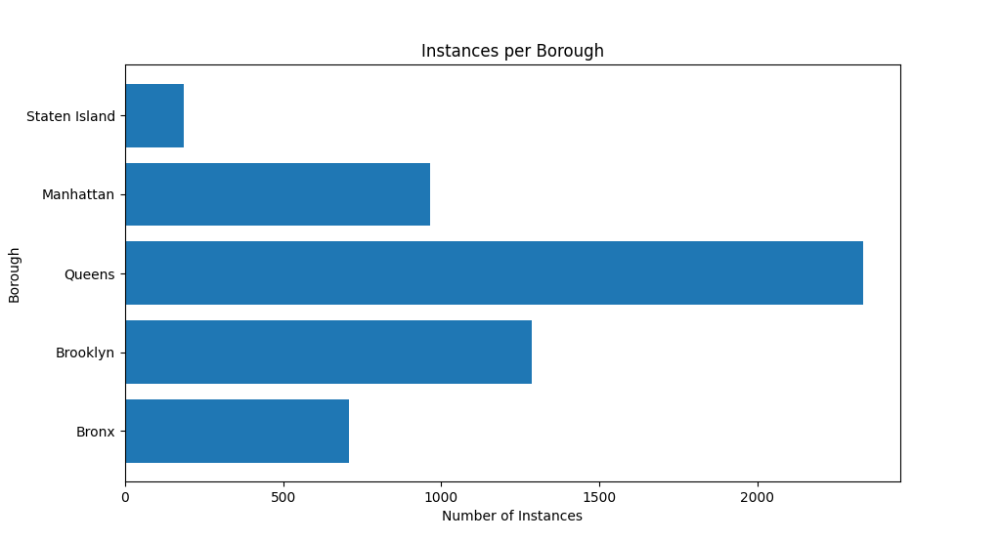
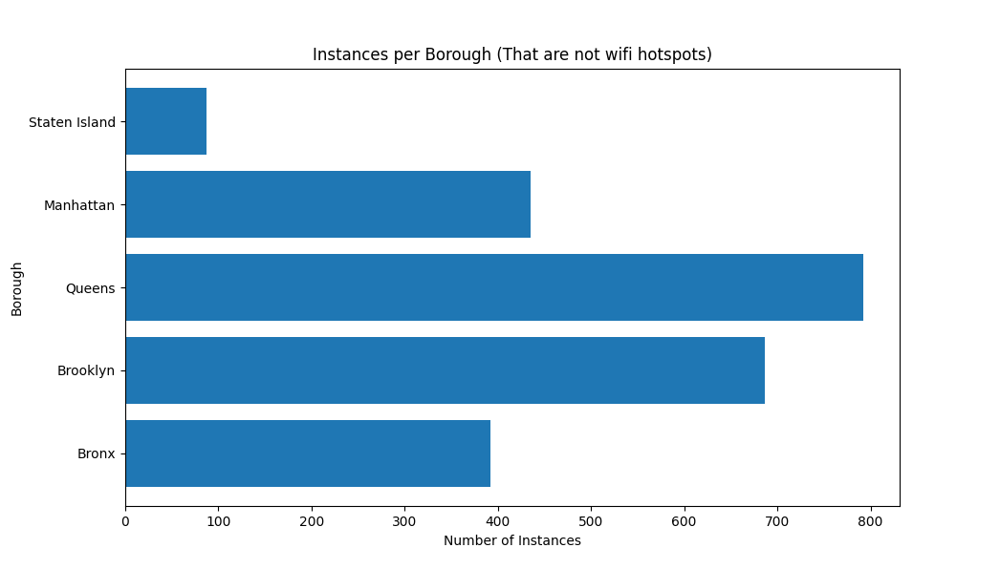

However even taking away the data that was provided by wifi hotspots shows some discrepency between the remaining results
Child care and women oriented resources make up the majority of the remaining data sets.

This is simply due to the difference in amount of data avalible for each tag. The wifi had about 3000+ data entries while some others had less than 100. It is important to also note the difference in infrastructure between the tags. Wifi hotspots are easier to set up and scatter around than entire buildings funded by organizations full of volunteers and administrative individuals.As such it makes sense that the wifi tag would have more entries than some of the other tags that require a lot more infrastructure to be set up. Another interesting analysis to look at would be the make up of what is in each borough. Unlike the tags it is much more probable that the data entries would have split their locations evenly amoung the five boroughs.

While the distribution was not expected to be split evenly, the differences between boroughs are evident.It can be seen the Queens has the highest number of instances in the data, with almost double the amount held by the next highest in Brooklyn. As previously discussed this distribution might be influenced greatly by the wifi data. Staten Island has by far the lowest. The Bronx is barely at above 500. Looking at the same type of distribution, but this time with out wifi hotspots leads to a slightly different results.

We can see that the distribution holds a similiar shape to its previous analysis. But this time the difference between boroughs is much smaller. The smaller boroughs like The Bronx and Staten Island are still lower than the rest, but the amount theyve decreased by is much smaller. Both seem to have lost around 100 rows of data each. Queens however was previously well in the mid 2000s, has suddenly dropped to just about 800. More than half of Queens instances were about wifi hot spots. Brooklyn is now only 100 instances away from Queens compared to being less than half of Queens previously. This shows that the boroughs are much closer in regards to administrative social resources, but are non the less have their differences. The other thing to keep in mind is the differences in population. Once those are charted out we can see a clearer connection to the discrepencies previously seen.

While not a one to one match, this chart showing the population sizes of the boroughs is much more aligned to the distribution of the resources than an equal split would have been. The only noticable difference would be that Brooklyn has a higher population than Queens, but Queens has a higher amount of resources attributed to it. We can also look at a different logisitcal issue that might give some light to the situation.